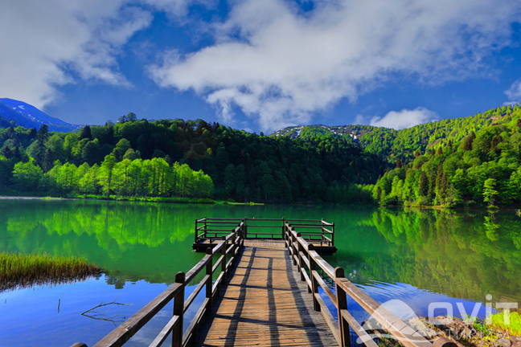
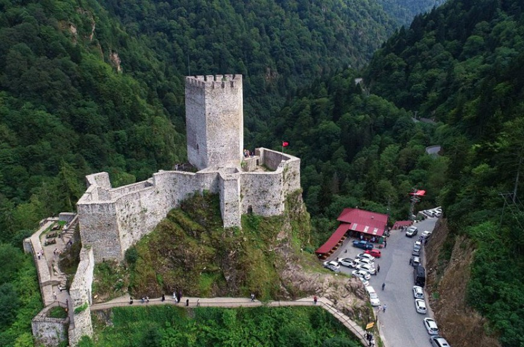
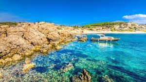
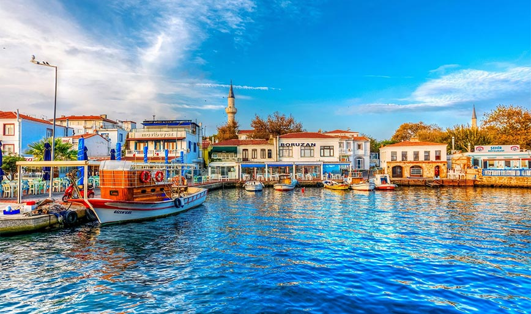
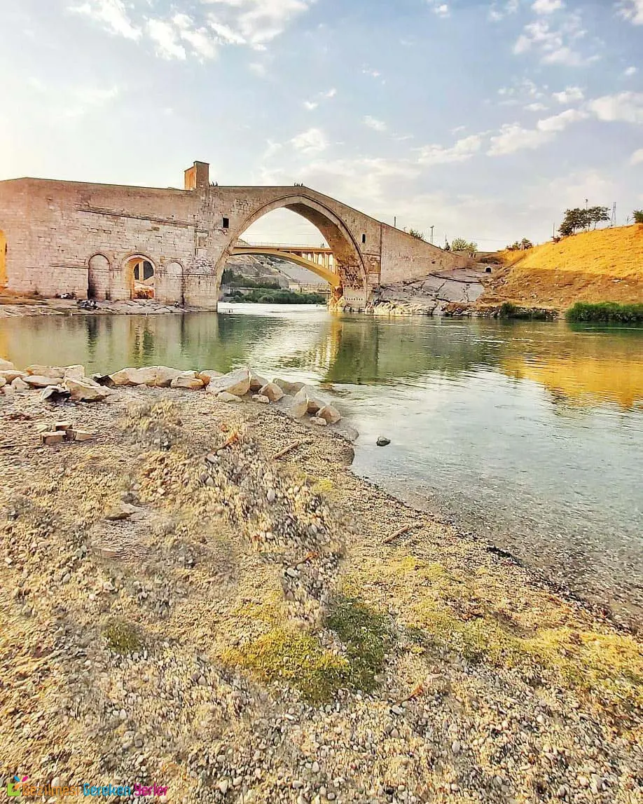
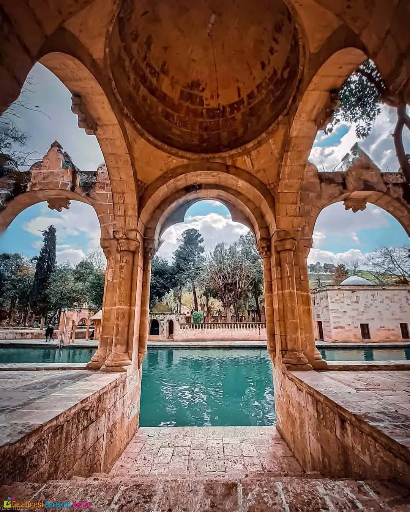
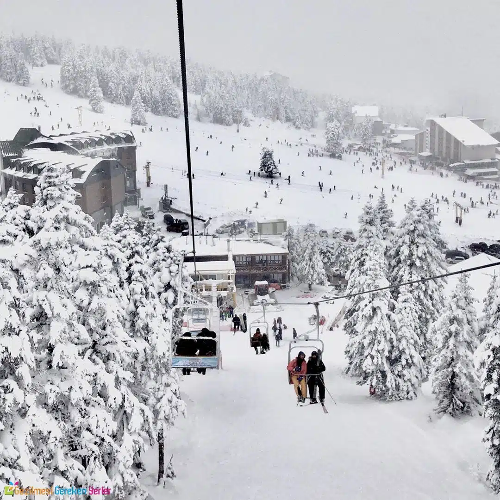
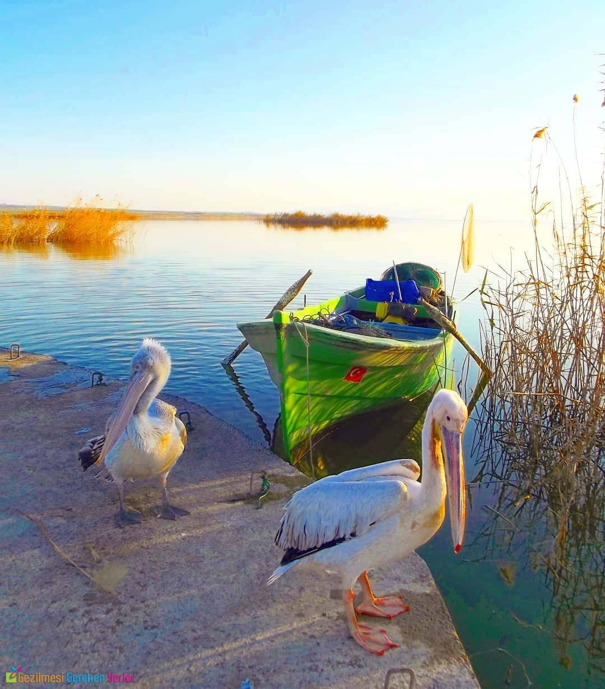
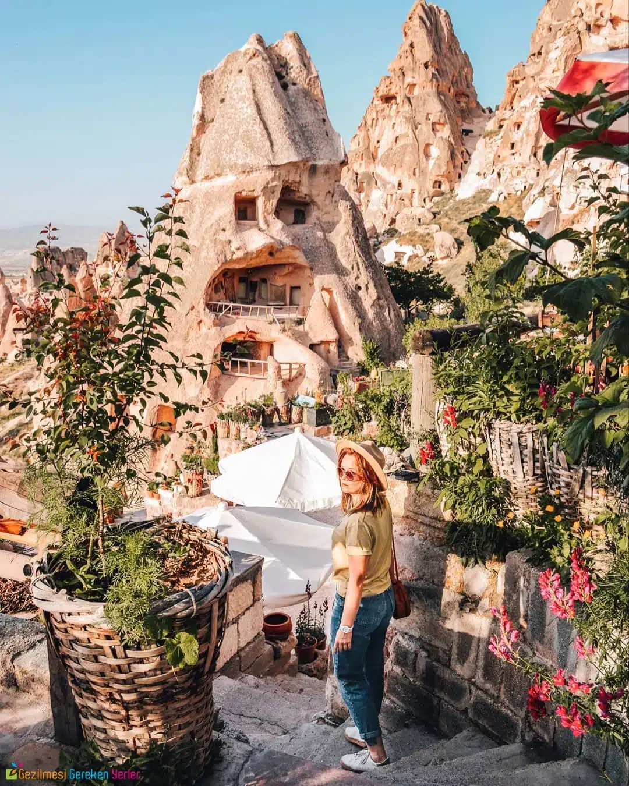
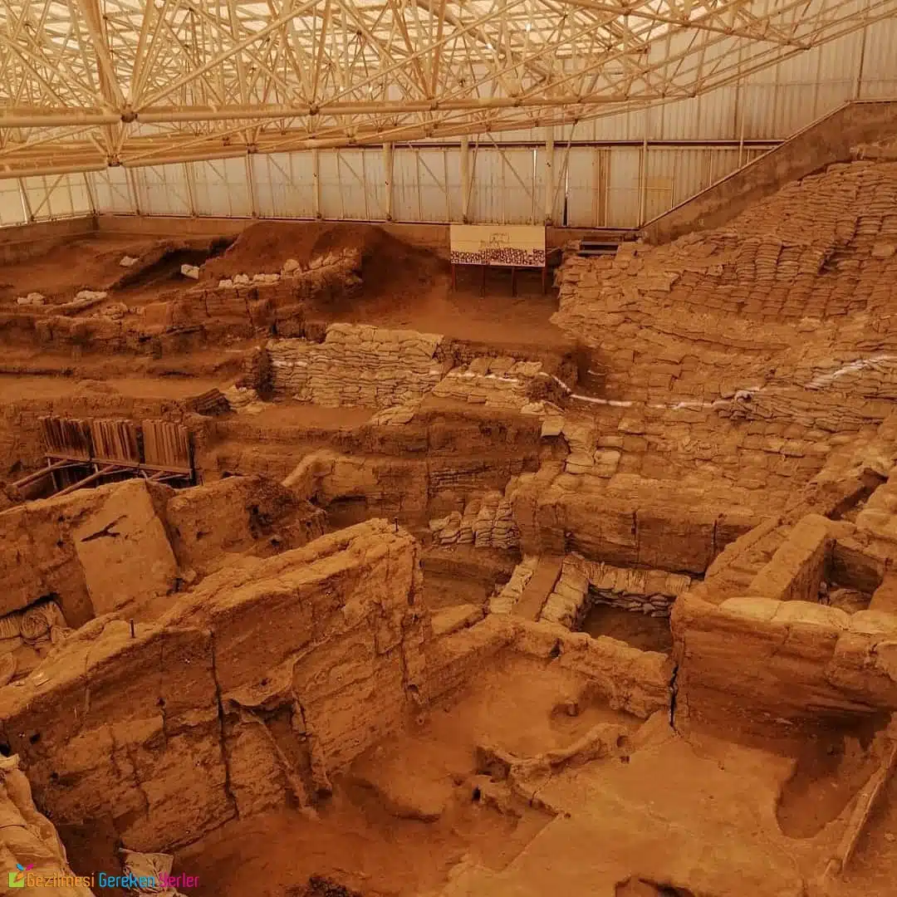

-
Karadeniz Bölgesi
- Borçka Karagöl 
Borçka-Camili karayolu üzerinde olup, Borçka ilçesine 27 km. uzaklıktadır.
1800'lü yıllarda bugünkü Klaskur yaylasının yakınında bulunan bir tepenin toprak kayması sonucu Klaskur deresinin önünü kapatması ile oluşmuş göllerdir.
Zengin orman örtüsü ve flora çeşitliliği ile ilgi çekmekte olup kamp turizmi için İlimizdeki sayılı yerlerdendir.
Ayrıca yöre halkı tarafından mesire yeri olarak kullanılmaktadır. - Zilkale 
-
Akdeniz Bölgesi
- Side Antik Kenti

Side Antik Kenti, Antalya’nın 80 km. doğusunda, Manavgat’ın 7 km. güneybatısında bulunan 350- 400 metre genişliğindeki bir yarımada üzerinde kurulmuştur.
Antik Dönem’de, Pamfilya’nın en önemli liman kenti olan Side’nin, M.Ö. 7. yüzyılda, bir yerleşim yeri olduğu bilinmektedir.
Tarih boyunca birçok medeniyete ev sahipliği yapan, Yunanlılar, Lidyalılar, Persler, Romalılar, Selçuklular ve Osmanlılar Dönemi’ni yaşayan kent, yüzyıllar boyunca ticaret ve liman kenti olarak stratejik bir önem taşımıştır. - Manavgat Şelalesi
-
Ege Bölgesi
- Gökçeada 
Gökçeada veya 1970 yılına kadar kullanılan adıyla İmroz (Osmanlıca: ايمروز, Yunanca: Ίμβρος Imvros),
Çanakkale'nin bir ilçesi ve Türkiye'nin en büyük adasıdır. Ege Denizi'nin kuzeyinde, Saros Körfezi girişinde yer almaktadır.
91 km kıyı şeridine sahiptir. Yıllık yağış miktarı metrekareye 950 – 1050 mm arasında değişmektedir. Adanın batısında yer alan İncirburnu Türkiye'nin de en batı noktasını oluşturmaktadır.
2011 ve 2012 yıllarında haftada 2 kez Gökçeada-İstanbul uçak seferleri yapılmış olup, 2013 ve sonrasında ticari yolcu uçuşları yapılmamıştır. - Bozcaada 
-
Doğu Anadolu Bölgesi
- Nemrut Krater Gölü

Nemrut'ta patlamalar sonucunda oluşan kraterin ağız genişliği 48 km2, taban genişliği 36 km² dir.
Nemrut kalderasında deniz seviyesinde 2.247 m yükseklikteki krater alanı içinde ikisi büyük toplam 5 tane göl bulunmaktadır.
Derinliği ortalama 100 m ve en derin noktası 155 m'dir. Göl çevresindeki sıcak sular ve kaplıcalar volkanik faaliyetlerin son izleridir.
Kar ve kaynak sularıyla beslenen ve yer yer derinleşen Nemrut Gölünün suları soğuk ve tatlıdır. - Harput Kalesi
-
Güney Doğu Anadolu Bölgesi
- Malabadi Köprüsü 
Batman-Silvan karayolunun 23. kilometresinde yer alan bu köprü bölgenin ve Anadolu’nun en değerli yapılarından bir tanesidir.
1147 yılında bölgenin en önemli medeniyetlerinden biri kabul edilen Artuklular döneminde inşa edilmiş olan köprü 7×150 metre ebatlarına sahiptir.
Kemerli yapısının haşmeti Evliya Çelebi’nin Seyahatname’sine konu olmuştur. - Balıklı Göl 
-
Marmara Bölgesi
- Uludağ 
Uludağ, Türkiye’nin en popüler ve en büyük kayak merkezidir. Son derece ilgi çeken bir dağ olan Uludağ, hem yerli hem de yabancı turistlerin ilgisini çeken bir yerdir.
Kış aylarında olduğu kadar yaz aylarında da tercih edilebilen Uludağ, Marmara Bölgesi’nde mutlaka görmeniz gereken bir doğa harikasıdır.
Uludağ’da kış aylarında kayak yapabiliyorken yaz aylarında ise sıcak havadan kurtulup biraz serinlemek ve piknik yapmak için Uludağ’ı tercih edebilirsiniz. - Manyas Kuş Gölü 
-
İç Anadolu Bölgesi
- Kapadokya 
Tarihte adı ‘Güzel Atlar Ülkesi’ anlamına gelen Kappa Tukia’dan gelen Kapadokya; İç Anadolu Bölgesi’nin mutlaka görülmesi gereken yerlerinden bir tanesidir.
Bir yerleşim birimi olmanın aksine pek çok mekânı kapsayan bir bölge olan Kapadokya; Nevşehir iline bağlıdır.
Dünyanın pek çok ülkesinden turistin her yıl akın ettiği Kapadokya’da doğal oluşumların zengin bir çeşitlilik yarattığı bilinir.
Üstelik Balon ile bir gökyüzü seyahati Kapadokya’yı ön plana çıkaran özelliklerden olur. - Çatalhöyük 
Zilkale ya da asıl adıyla Zirkale, Rize'nin Çamlıhemşin ilçesi sınırlarında, Fırtına Deresi Vadisi’nde yer alan, ilk inşa tarihi kesin olarak bilinmeyen bir kaledir.
14. veya 15. yüzyılda inşa edilen kale, 1800'lü yılların sonuna kadar kullanılmıştır. Sekiz burç ve bir gözetleme kulesinden oluşur.
Savunma hendeği durumundaki Zil deresine merdivenle inilir. Kale, 1. derece arkeolojik sit alanı içerisindedir.

Manavgat Şelalesi, Antalya'nın Manavgat ilçesinde, Manavgat Nehri üzerinde bulunan bir şelaledir.
Antalya'ya 72 km mesafededir. Manavgat ilçesinin 3 km kuzeyinde bulunan ve adını bu ilçeden alan şelale, ırmak sularının 3–4 m'lik bir falezden düşmesiyle meydana gelir.
Az bir yükseklikten dökülmesine rağmen geniş bir alan üzerinde yüksek bir debiyle akar. Ayrıca Manavgat Irmağını besleyen kaynaklardan en büyüğü olan karstik Dumanlı kaynağı, Oymapınar barajı yapıldıktan sonra baraj gölü içinde kalmıştır.
Bozcaada veya eski adıyla Tenedos (Yunanca: Τένεδος Ténedhos, Latince: Tenedus), Türkiye'nin üçüncü büyük, Ege Denizi’nde ise Gökçeada‘dan sonra ikinci en büyük adası ve Çanakkale ilinin nüfus bakımından en küçük[4] ilçesidir.
Türkiye'nin (büyükşehir merkez ilçeleri hâriç) köyü olmayan tek ilçesidir. Yüzölçümü 40 km2, anakaraya uzaklığı 6 km'dir.
2022 yılı verilerine göre ilçe nüfusu 3.120'dir. İlçede kışları nüfus düşmekte, yazları ise tatilcilerle artmaktadır. Bağcılık, deniz turizmi ve rüzgâr santralleriyle ön plana çıkar.

Harput Kalesi (Süt Kalesi), Urartular tarafından dikdörtgen bir plan üzerine kurularak yapılmış olan mimari yapıdır.
Şu anki Elazığ il sınırları içerisindeki tarihi Harput mahallesinde bulunmaktadır. Kale, iç ve dış kale olmak üzere iki bölümden oluşmaktadır.
Rivayete göre yapımında kullanılan harca su yerine süt eklenmiştir bu nedenle "Süt Kalesi" olarak da adlandırılır.
Yine bir rivayete göre, Süt Kalesi harcında su yerine süt kullanılma sebebi dönemde yaşanan su kıtlığı olduğu söylenir.
İnanışa göre İbrahim peygamberin ateşe atıldığı yer olarak bilinen Balıklı Göl, Peygamberler Şehri Şanlıurfa’nın en özel mekanlarından bir tanesidir.
Çok görkemli bir yapı olmasının yanı sıra burada bulunan balıklar da ilgi çekicidir. Balıklı Göl’de zaman geçirmek ve balıklara yem atmak bölgede gerçekleştirebileceğiniz en değerli aktivitelerdendir.
Manyas Gölü, herkesin bildiği gibi Türkiye’nin kuş cenneti olarak adlandırılmaktadır.
200’den fazla kuş türünün bulunduğu bu eşsiz doğa harikasında kuş gözlem kulesi de yer alıyor.
Siz de Marmara’nın eşsiz güzelliklerinden biri olan Manyas Gölü’nü ziyaret ederek bu kuşları yakından görebilir ve gölde tekne kiralayarak manzaranın tadını çıkarabilirsiniz.
Konya’nın Çumra ilçesi sınırları içinde bulunan Çatalhöyük insanlığın ilk ve en eski yerleşim birimlerinden bir tanesidir.
2012 yılında UNESCO Dünya Kültür Mirası Listesi’ne alınan bu kalıntılar 1958 yılından bu yana ülkemizin en önemli tarihi merkezlerinden bir tanesi olmayı başarmıştır.
Siz de İç Anadolu’da gezilecek yerler listesi yapıyorsanız Çatalhöyük’ü mutlaka ilk 10’a yazmalısınız.